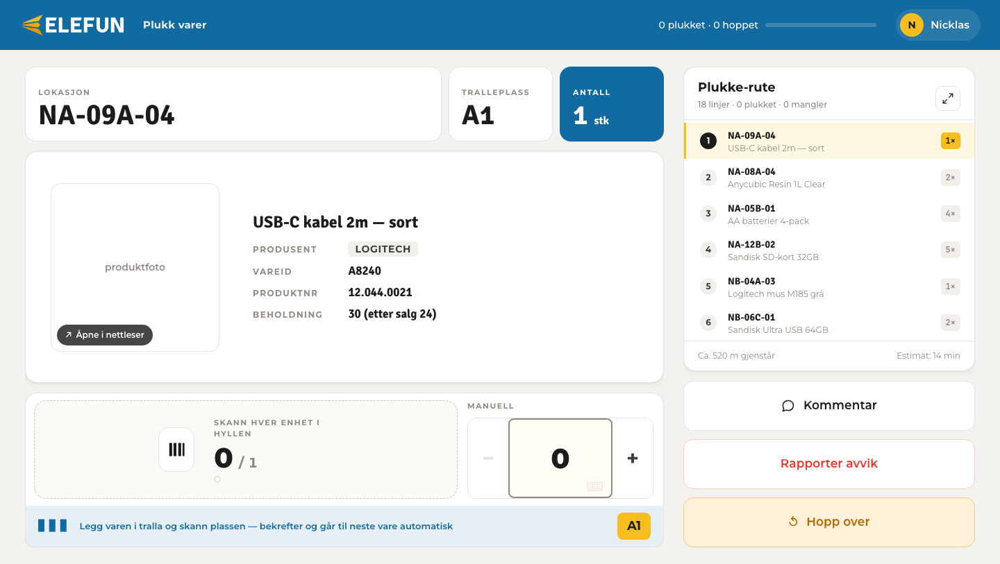
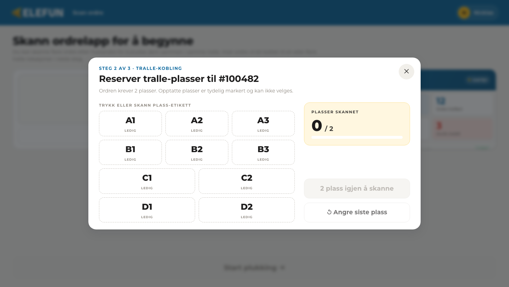
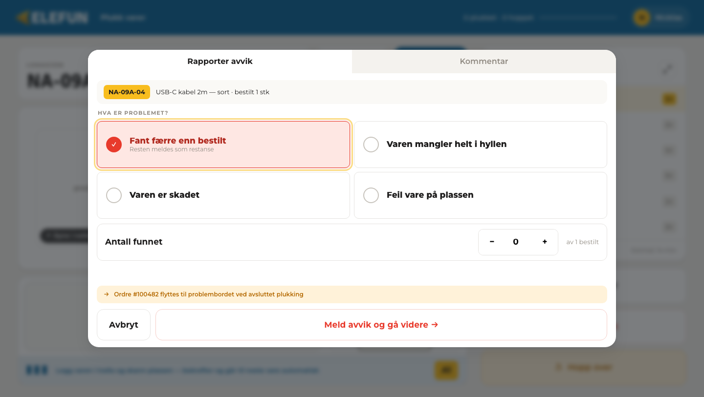
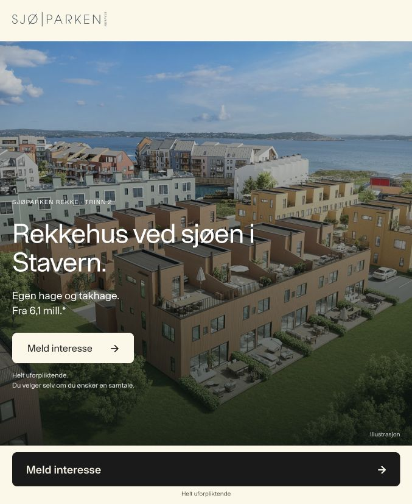
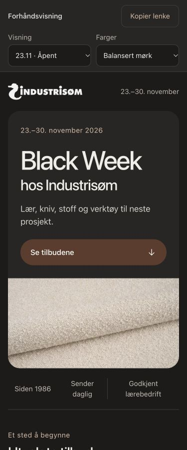

Siden første status
I Status 1 beskrev jeg oppstarten, arbeidet med plukkeflyten og lagring av en aktiv plukkeøkt. Etter dette har jeg jobbet videre med frontend i PlukkeFun, blant annet på bakgrunn av tilbakemeldinger fra Elefun. Siden forrige versjon av denne rapporten har jeg også arbeidet med Sjøparken og Industrisøm. Jeg sendte dessuten et ferdig utkast til Springs egen nettside 20. oktober.
Arbeidsoppgavene mine
Jeg har justert plukkeskjermen slik at produktinformasjon, lokasjon, tralleplass og antall er lettere å lese mens man arbeider. Jeg har også gjort overgangen mellom skanning av varer og bekreftelse av tralleplass enklere å følge.
En annen oppgave har vært å forbedre håndteringen av avvik og kommentarer. Et registrert avvik eller en kommentar kan nå åpnes igjen med de tidligere opplysningene på plass, slik at brukeren kan rette dem. Jeg har dessuten sperret fjerning av en ordre når varer allerede er telt. Sperren ligger både i grensesnittet og i logikken for plukkeøkten.
Sjøparken
Jeg laget en designhåndbok med utgangspunkt i Sjøparkens eksisterende nettside. Den brukte jeg til å bygge en mobiltilpasset landingsside for Sjøparken Rekke trinn 2. Prosjektinnholdet er kortet ned for besøkende som kommer fra annonser, med «Meld interesse» som tydelig hovedhandling. Jeg laget også en redigerbar Figma-fil med desktop- og mobilvisning og skjermene i undersøkelsen.
Interesseskjemaet har fått en kort undersøkelse om boligønsker, flytting og ønsket oppfølging. Etter tilbakemeldinger gjorde jeg spørsmålene obligatoriske, mens ekstra kommentar er valgfri. Innsendingen er testet, og svarene lagres med henvendelsen. Arbeidsversjonen krever innlogging.
Industrisøm
Jeg har laget en designguide for Industrisøm basert på profilguiden og den eksisterende nettbutikken. Deretter jobbet jeg med en mobiltilpasset Black Week-side for trafikk fra blant annet Instagram. Siden viser utvalgte tilbud og egne kategorisider som leder videre til nettbutikken. Etter tilbakemeldinger fjernet jeg handlekurv og omfattende menyer, og justerte fargene og produktvisningen.
Jeg laget en forhåndsvisning der kolleger kan velge kampanjedato og fargevariant. Jeg har også arbeidet med ideer til video og reklame for Instagram og Facebook. Dette er foreløpig konsepter, ikke ferdig produserte annonser.
Utfordringer og erfaringer
Det mest krevende i denne fasen har vært å få det brukeren ser til å stemme med tilstanden i en aktiv plukkeøkt. Når noen endrer et avvik midt i arbeidet, må de gamle verdiene vises riktig og lagres uten at annen informasjon går tapt. På samme måte må en påbegynt ordre beskyttes selv om en handling skulle bli utløst på en annen måte enn gjennom knappen på skjermen.
Tilbakemeldingene fra Elefun har gjort det lettere å vurdere løsningene opp mot den faktiske arbeidssituasjonen. I et lager må informasjon kunne oppfattes raskt, og handlingene bør fungere med skanner og store treffområder. Det har vært spennende å se hvor mye små justeringer i flyten betyr.
I arbeidet med landingssidene har jeg måttet vurdere hva besøkende trenger å se først. For Sjøparken handlet det om å korte ned prosjektstoffet uten å miste viktig informasjon. For Industrisøm har produktutvalget, mobilvisningen og tilbakemeldinger på farger og oppsett ført til flere justeringer underveis.
Hvor prosjektene står nå
Den åpne PlukkeFun-versjonen kan brukes til å demonstrere arbeidsflyten, men den er fortsatt en prototype. Ordre, varer, bruker og tralle er testdata. Autentisering og koblingene til Elefuns faktiske ordre- og lagersystem er ikke ferdige. Videre arbeid er å teste flyten grundigere med brukerne og erstatte testdata og midlertidige løsninger med reelle integrasjoner.
Sjøparken-siden er en privat arbeidsversjon. Henvendelser lagres der, men kobling til CRM og automatisk videresending til megler er ikke satt opp. Industrisøms Black Week-side er en forhåndsvisning, ikke en lansert kampanje. Endelig produktutvalg, prissynkronisering og sporing må avklares før den tas i bruk.
Skjermbilder og skjermopptak
PlukkeFun-opptakene er fra 14. oktober og viser testdata. Bildene av Sjøparken og Industrisøm viser arbeidsversjoner.




